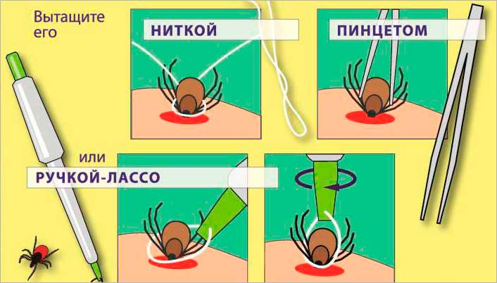

Что происходит, когда кусает клещ? Полное руководство по первой помощи и акарицидной обработке участка

Укус клеща: невидимая угроза, которую нельзя игнорировать
Весна и лето — это время отдыха на природе, дачных работ и прогулок в парках. К сожалению, это также и сезон активности клещей, которые являются переносчиками крайне опасных заболеваний. Вопреки распространенному мнению, клещи не прыгают с деревьев, а поджидают свою жертву в траве и кустарниках, поднимаясь на высоту не более 1,5 метров.
Что происходит в момент укуса?
Клещ не просто "кусает" — он присасывается к коже. Его ротовой аппарат (гипостом) имеет специальные крючки, которые надежно фиксируют его в теле. В этот момент клещ вводит в ранку свою слюну, которая выполняет две ключевые функции:
- **Обезболивание (анестезия):** Вы не почувствуете укуса, что позволяет клещу оставаться незамеченным часами или даже днями.
- **Передача инфекции:** Если клещ инфицирован, именно через слюну в кровь человека или животного попадают возбудители клещевого энцефалита, боррелиоза (болезни Лайма) и других опасных инфекций.
Главная опасность: клещевой энцефалит и боррелиоз
- **Клещевой энцефалит (КЭ):** Вирусное заболевание, поражающее центральную нервную систему. Может привести к параличу, инвалидности и даже смерти. Вакцинация — лучшая профилактика, но после укуса требуется экстренная профилактика.
- **Клещевой боррелиоз (Болезнь Лайма):** Бактериальное заболевание, которое при отсутствии лечения поражает суставы, сердце и нервную систему. Характерный симптом — мигрирующая эритема (красное кольцо вокруг места укуса), но она появляется не всегда.
Пошаговая инструкция: Что делать, если укусил клещ?
Сохраняйте спокойствие. Правильные и быстрые действия могут минимизировать риск заражения.
Шаг 1: Правильное удаление клеща
Чем быстрее вы удалите клеща, тем меньше вероятность передачи инфекции.
- **Подготовьте инструменты:** Пинцет с тонкими концами, специальный клещеверт (ручка-лассо) или прочная нитка.
- **Захват:** Захватите клеща как можно ближе к хоботку (головке), у самой кожи. **Важно:** Не сдавливайте тело клеща, чтобы не выдавить его содержимое в ранку.
- **Удаление:** Медленно, без резких движений, выкручивайте клеща вокруг своей оси (лучше против часовой стрелки). Резко дергать нельзя!
- **Обработка ранки:** После удаления тщательно промойте место укуса водой с мылом и обработайте любым антисептиком (йод, спирт, хлоргексидин).
**Внимание!** Если вы не уверены в своих силах или клещ находится в труднодоступном месте, немедленно обратитесь в ближайший травмпункт или медицинское учреждение в Омске.
Шаг 2: Анализ клеща
Удаленного клеща необходимо поместить в плотно закрытую емкость (например, небольшой флакон или баночку) с кусочком влажной ваты или травинки и как можно скорее доставить в лабораторию для анализа на наличие возбудителей КЭ и боррелиоза.
Шаг 3: Наблюдение и профилактика
Даже если клещ оказался "чистым", в течение месяца после укуса внимательно следите за своим самочувствием:
- **Температура:** Повышение температуры тела.
- **Сыпь:** Появление красного кольца (эритемы) вокруг места укуса.
- **Симптомы гриппа:** Головная боль, ломота в теле, слабость.
При появлении любых тревожных симптомов немедленно обратитесь к врачу-инфекционисту.
Акарицидная обработка участка: надежная защита
Лучший способ избежать укуса клеща — это профилактика. Если вы живете в частном доме или имеете дачный участок в Омске, **акарицидная обработка** является самым эффективным методом защиты.
Что такое акарицидная обработка?
Это профессиональная дезинсекционная процедура, направленная на уничтожение клещей на определенной территории.
| Характеристика | Описание |
|---|---|
| **Цель** | Уничтожение иксодовых клещей, а также других вредных насекомых. |
| **Средства** | Используются специальные акарицидные препараты (инсектоакарициды), безопасные для людей и домашних животных после высыхания. |
| **Метод** | Обработка проводится с помощью профессиональных опрыскивателей (генераторов холодного или горячего тумана), которые обеспечивают равномерное покрытие травы, кустарников и нижних ветвей деревьев. |
| **Сроки** | Идеальное время — ранняя весна (март-апрель), как только сойдет снег и почва прогреется до +5°C, до начала активного сезона. Повторная обработка может потребоваться в середине лета. |
Почему стоит доверить обработку профессионалам "СибДез Омск"?
Самостоятельная обработка участка может быть неэффективной и даже опасной. Профессиональная служба дезинсекции "СибДез Омск" гарантирует:
- **Высокую эффективность:** Мы используем сертифицированные, мощные препараты, которые действуют до 2-3 месяцев.
- **Безопасность:** Наши специалисты строго соблюдают нормы СанПиН и используют средства, которые не наносят вреда растениям, людям и домашним животным после завершения работ и проветривания.
- **Комплексный подход:** Обрабатывается вся территория, включая периметр, заборы и места потенциального скопления клещей.
- **Опыт работы в Омске:** Мы знаем особенности местного климата и популяции клещей, что позволяет выбрать оптимальную стратегию обработки.
Не рискуйте здоровьем своей семьи и домашних питомцев. Закажите профессиональную акарицидную обработку участка в "СибДез Омск" и наслаждайтесь безопасным отдыхом на свежем воздухе!
Заказать обработку от клещей в Омске
Заключение
Укус клеща — это серьезный повод для беспокойства, но своевременная первая помощь и последующее наблюдение могут предотвратить тяжелые последствия. Однако лучшая стратегия — это активная профилактика. **Акарицидная обработка участка** — это инвестиция в ваше спокойствие и здоровье.
Свяжитесь с нами сегодня, чтобы узнать о ценах и заказать обработку вашего участка от клещей в Омске.